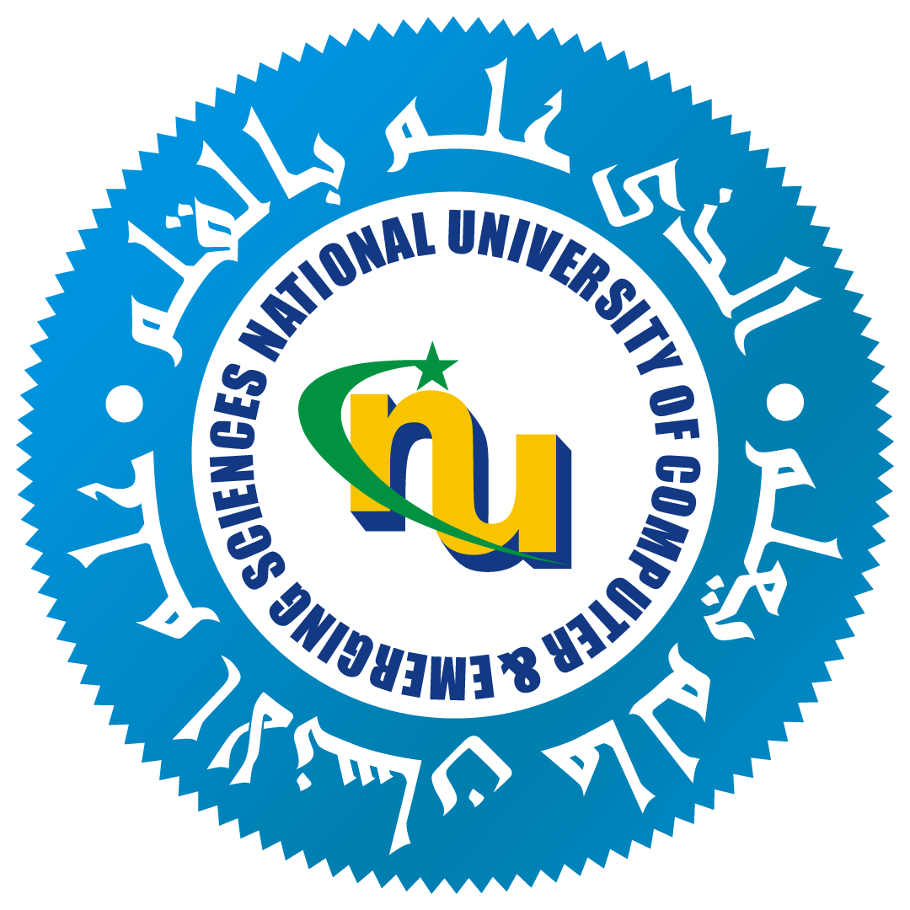

Hi there! I'm an AI researcher and a MS graduate in Data Science from FAST NUCES , advised by Dr. Rafi. I obtained my B.E. degree from the School of Engineering, NED University . Previously, I have worked as a Teaching Assistant at FAST NUCES for the course of Advanced Computer Vision for post-grad level with Dr. Maria and also worked as a Data Scientist at  for their global supply chain tech department building computer vision solutions.
for their global supply chain tech department building computer vision solutions.
My research focuses on Trustworthy & reliable AI, utilizing Conformal Inference and Uncertainty Quantification to build statistically reliable machine learning systems. My work is rooted in risk-aware decision-making for Computer Vision and Natural Language Processing.